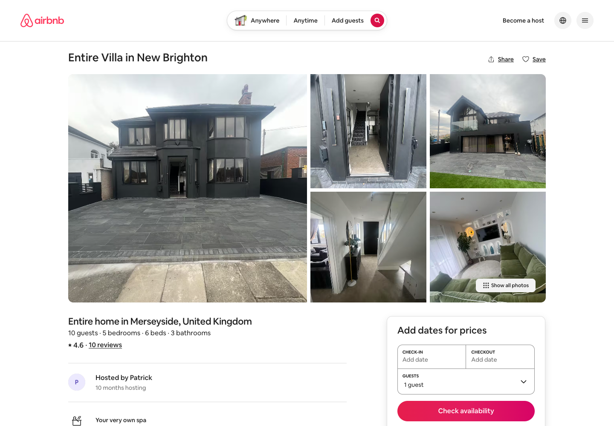

Bayswater Detox is better than its current website and listings make it look.
The business has a private spa, separately booked accommodation upstairs and a location near New Brighton. Online, that distinctive offer is hidden behind weak presentation, poor photography and confusing booking choices.
The website does not look premium.
The photography undersells the property.
Private use and the Wirral location are unclear.
Booking is confusing.
Airbnb hides the spa.
The accommodation listings contradict one another.
3website booking routes
0/5opening Airbnb images show the spa
72public images reviewed
8.1smobile main-content test

The opening Airbnb photographs do not show the spa.
01 · Start here
The five changes that matter most.
These are the visible problems most likely to weaken trust, lose enquiries and make booking harder. They are ordered by their importance to the business.
01
Replace the website.
What is wrong
The current website looks unfinished, uses unrelated template language and does not present Bayswater Detox as a premium private spa.
Why it matters
Customers judge the quality of the visit before they arrive. A weak website makes the spa harder to trust and easier to dismiss.
What AGNC will do
AGNC will replace it with a premium website that explains the spa, the Wirral location and the upstairs stay immediately.
What will be in place afterwards
Bayswater Detox will have a website ready to use in every advert, message and listing.
The new website will present Bayswater Detox at the same standard as the experience itself.
02
Replace the photography.
What is wrong
The current images are inconsistent, repeat rooms, hide the spa and make both the spa and accommodation look less impressive than they are.
Why it matters
Customers cannot value privacy, atmosphere or quality if the photographs do not show them properly.
What AGNC will do
AGNC will produce a complete professional photo and video library for the website, listings, advertising and social content.
What will be in place afterwards
Bayswater Detox will have a consistent set of media covering the property, arrival, spa, accommodation and guest experience.
Better media will make the property easier to trust, understand and want to book.
03
Make booking simple.
What is wrong
Customers are sent through three different website booking routes, including a restaurant form, event products and separate service calendars.
Why it matters
Every unnecessary choice or irrelevant page gives a customer another reason to leave.
What AGNC will do
AGNC will create one clear route for the private spa and one clear route for the separately booked upstairs stay.
What will be in place afterwards
Booking starts, completed bookings and enquiries will be visible for each route.
Customers will always know what they can book and what to do next.
04
Rebuild the Airbnb listing.
What is wrong
Airbnb’s first five photographs do not show the spa, the 53-image gallery is poorly organised and the copy presents generic accommodation.
Why it matters
The listing hides the strongest reason to choose Bayswater Detox at the moment guests are comparing properties.
What AGNC will do
AGNC will rewrite the listing, replace and reorder the gallery, and lead with the spa and the complete stay experience.
What will be in place afterwards
Bayswater Detox will have an Airbnb listing that explains the value of the property before guests reach the booking box.
The listing will sell the reason to book, not simply show that rooms exist.
05
Make the spa and upstairs stay sell one another.
What is wrong
The spa website barely mentions the accommodation, while the accommodation listings fail to make the private spa the centre of the story.
Why it matters
The business is losing chances to turn spa interest into stay enquiries and accommodation interest into spa bookings.
What AGNC will do
AGNC will connect both offers across the website, listings, guest messages and follow-up marketing while keeping their bookings separate and clear.
What will be in place afterwards
Both parts of the property will actively create interest for each other.
Every spa guest and every overnight guest becomes a chance to sell more of what Bayswater Detox offers.
02 · Website
The website looks unfinished and makes the offer difficult to understand.
The opening screen does not say private spa, Wallasey, Wirral or upstairs accommodation. Customers then find restaurant copy, an ended package, broken pages and several ways to book.
On mobile, the main content took a median 8.1 seconds to appear.People visiting from a phone can leave before Bayswater Detox has had a fair chance to explain the experience.
View website speed and accessibility test results
Six recorded tests are retained below. They are snapshots of the website, not a guarantee of how every visit performs.
Mobile performance663-run median / 100Mobile LCP8.1s3-run median, labDesktop performance913-run median / 100Desktop LCP1.8s3-run median, labAccessibility94mobile and desktop medianSEO92home-page lab score
The current images make the property look less valuable than it is.
The website and listings rely on inconsistent crops, repeated rooms and phone-style photographs. The Airbnb opening sequence does not show a spa facility at all.
Position 1
Front exterior and forecourt
Portrait cover has large empty paving and leaning verticals.
Position 2
Spa/garden entrance
Dark threshold view does not explain route or privacy.
Position 3
Hallway between sitting room and corridor
Narrow portrait crop; doorway blocks the room relationship.
Position 4
Rear property elevation
Repeated exterior has empty foreground.
Position 5
Green-sofa sitting room
Portrait crop, strong perspective and little sense of scale.
What customers see now
They see access areas and accommodation before the spa, then have to search a 53-image gallery where spa interiors are placed under “Exterior”. Lastminute shows only one clear spa interior among its 10 unique images.
The strongest reason to book is being hidden.
What AGNC will produce
A complete professional library covering arrival, the spa, every facility, bedrooms, bathrooms, living areas, daytime and evening atmosphere, lifestyle use, local context and the relationship between the spa and upstairs stay.
Bayswater Detox will have premium media for the website, Airbnb, adverts, social content and future campaigns.
Property exterior and street
Front elevation, identifiable number/signage, street approach and parking boundaries.
Replaces
Phone-like vertical exteriors without a clear arrival sequence.
Used in
Website, Airbnb, Lastminute, Google Business Profile, email.
Question this answers
Have I found the right place and where do I arrive?
Benefit
Arrival confidence and a recognisable cover option.
Entrance and private access
Gate/door sequence, lockbox or chosen access method, threshold and route to the booked area.
Replaces
Isolated door/keypad details with no spatial relationship.
Which equipment is included and what condition is it in?
Benefit
Trust in the advertised inventory.
Changing, preparation and supplied items
Confirmed dressing area, towels, robes, toiletries, storage, refreshments and instructions.
Replaces
Missing practical evidence.
Used in
FAQ, booking, pre-arrival email, app.
Question this answers
What is supplied and what should I bring?
Benefit
Fewer preparation questions.
Safety and operating details
Only approved, useful details such as controls, steps, handrails, signage and emergency information.
Replaces
Uncontextualised switches and equipment close-ups.
Used in
Practical information, app tutorials and operations library.
Question this answers
How do I use this safely and where is the control?
Benefit
More confident self-service.
Upstairs bedrooms
A consistent doorway wide, hero angle, storage/detail and accurate sleeping layout for every room.
Replaces
Vertical distortion, partial beds and repeated angles.
Used in
Airbnb, Lastminute, stay page and email.
Question this answers
Which room and bed will each person use?
Benefit
Layout confidence and fewer capacity questions.
Living, kitchen and dining
Level wide views, connected-space sequence, equipment and a properly dressed dining setup.
Replaces
Tilted wide-angle files with floor/ceiling dominance.
Used in
Accommodation listings and stay page.
Question this answers
Can our group spend time and eat together comfortably?
Benefit
Clearer use and scale.
Bathrooms
One identifying wide plus shower/bath and supplied-detail frames for every guest bathroom.
Replaces
Three isolated portrait images and conflicting public counts.
Used in
Listings, stay page and property details.
Question this answers
How many bathrooms are there and what does each contain?
Benefit
Visual proof after facts are confirmed.
Spa/stay relationship
A sequence that shows building/route relationship without implying access not included in a booking.
Replaces
Two disconnected stories.
Used in
Website spa-and-stay promotion, listings and email.
Question this answers
Are the spa and stay together, and is access included?
Benefit
Cross-interest with accurate boundaries.
Day and evening atmosphere
Matched hero angles in natural daylight and controlled evening lighting.
Replaces
Mixed white balance and ad-hoc lighting.
Used in
Website, listings, email, organic and paid social.
Question this answers
What mood can I expect at my visit time?
Benefit
Desirability without misrepresenting the space.
Horizontal and vertical masters
Protected compositions for 16:9, 4:5, 1:1 and 9:16 crops plus Airbnb-friendly landscape files.
Replaces
One portrait phone file forced into every placement.
Used in
All digital channels.
Question this answers
Not applicable — this protects the same accurate view in each interface.
Benefit
Consistent production quality and less waste.
Local context
Only genuinely relevant, accurately located New Brighton/Wirral context with a clear relationship to the property.
Replaces
Generic location language without evidence.
Used in
Search pages, stay page, email and campaigns.
Question this answers
What is nearby and how does the stay fit the trip?
Benefit
Stronger local relevance.
Optional consented lifestyle
Individuals, couples or a small group using areas naturally, with releases and safeguarding of privacy.
Replaces
Empty rooms only, where lifestyle evidence would help.
Used in
Website, advertising, social and email.
Question this answers
Can I picture this visit for someone like me?
Benefit
Emotional context without fabricated testimonials.
Video
What it shows
What this changes
What the guest gains
Main property film
Accurate property, spa and stay overview
One flagship asset for site, email and sales
A complete first impression
Spa walkthrough
Route through every spa facility
Fewer layout and inclusion explanations
Clear private-use expectations
Upstairs walkthrough
Room-to-room accommodation sequence
Fewer sleeping/layout questions
Confidence before booking
Arrival/private-entry film
Approach, parking and time-limited access
Fewer arrival calls
A calmer self-check-in
Equipment tutorial for each facility
Short safe operating guidance
Fewer repeated demonstrations
Help at the point of use
Website hero and 30s/15s adverts
Silent-first horizontal and vertical cuts with captions
Reusable campaign variants
Accurate message in the format they encounter
Email, remarketing and behind-the-scenes clips
Focused reminders and responsible production proof
A library for future campaigns
Useful detail without replaying a long film
Drone filming where suitable
Show the property and its setting properly.
Only if the property, flight area, permissions, privacy, weather and current CAA requirements make the work safe and appropriate.
Ground-based alternative: Elevated ground-based stills, long-lens context and a stabilised gimbal arrival sequence.
Exterior establishing footage
Property approach and surrounding context
Relevant Wirral/coastal context
Smooth arrival sequence
Day and golden-hour alternatives
Horizontal hero footage
Vertical advert cuts
High-resolution aerial stills
What this adds: Geographic context, easier arrival understanding, higher perceived production care and stronger opening material.
View all 72 public images and the decision for each one
Nine website images, all 53 Airbnb photographs and 10 unique Lastminute images were reviewed. Search or filter the complete inventory below.
Image
What it currently shows
What is wrong
What should replace it
Where the new image will help
Refreshment/utility counterFree Coffee and Tea image
Operational clutter and mixed light.Missing: A property-specific, accurately labelled view with scale, guest purpose and consistent editing
reshotLevel property-specific wide plus practical detail
Website; Google Business Profile; approved email/social cropsGuests can distinguish real Bayswater Detox imagery from generic content and judge the facility more confidently.
Generic person in an ice bathIce Bath Experience image
Generic stock-style image does not evidence Bayswater Detox.Missing: A property-specific, accurately labelled view with scale, guest purpose and consistent editing
replaceProperty-specific ice-bath wide and functional detail
Website; Google Business Profile; approved email/social cropsGuests can distinguish real Bayswater Detox imagery from generic content and judge the facility more confidently.
Fogged steam-room doorSteam Room service image
Condensation hides the advertised room.Missing: A property-specific, accurately labelled view with scale, guest purpose and consistent editing
reshotLevel property-specific wide plus practical detail
Website; Google Business Profile; approved email/social cropsGuests can distinguish real Bayswater Detox imagery from generic content and judge the facility more confidently.
Open spa doors and gym equipmentFull Detox Package image
Tilted doorway view with equipment clutter.Missing: A property-specific, accurately labelled view with scale, guest purpose and consistent editing
reshotLevel property-specific wide plus practical detail
Website; Google Business Profile; approved email/social cropsGuests can distinguish real Bayswater Detox imagery from generic content and judge the facility more confidently.
Timber sauna interiorSaunas facility tile
Coloured lighting and crop differ from the set.Missing: A property-specific, accurately labelled view with scale, guest purpose and consistent editing
reshotLevel property-specific wide plus practical detail
Website; Google Business Profile; approved email/social cropsGuests can distinguish real Bayswater Detox imagery from generic content and judge the facility more confidently.
Equipment is covered in a rotated portrait crop.Missing: A property-specific, accurately labelled view with scale, guest purpose and consistent editing
reshotLevel property-specific wide plus practical detail
Website; Google Business Profile; approved email/social cropsGuests can distinguish real Bayswater Detox imagery from generic content and judge the facility more confidently.
Jacuzzi close viewJacuzzis facility tile
Close crop and uneven colour; scale is unclear.Missing: A property-specific, accurately labelled view with scale, guest purpose and consistent editing
reshotLevel property-specific wide plus practical detail
Website; Google Business Profile; approved email/social cropsGuests can distinguish real Bayswater Detox imagery from generic content and judge the facility more confidently.
Tall low-light crop with unclear facility identity.Missing: A property-specific, accurately labelled view with scale, guest purpose and consistent editing
reshotLevel property-specific wide plus practical detail
Website; Google Business Profile; approved email/social cropsGuests can distinguish real Bayswater Detox imagery from generic content and judge the facility more confidently.
Garden and spa-outbuilding heroHome hero
Hard midday light and no private-arrival context.Missing: A property-specific, accurately labelled view with scale, guest purpose and consistent editing
reshotLandscape property-and-spa establishing frame with protected headline area
Website; Google Business Profile; approved email/social cropsGuests can distinguish real Bayswater Detox imagery from generic content and judge the facility more confidently.
Front sitting room with fireplace and televisionLiving room image 1; Accommodation group
Tilted ultra-wide view; ceiling light and floor dominate.Missing: Living-room scale, seating and connection
Lastminute/syndication crop set; Bayswater Detox stay page; approved email cropsLess repetition in a limited gallery.
04 · Booking
Customers are being given too many ways to book the same business.
Reservations, Experiences and Book Online currently lead to different systems. One uses restaurant language, another sells event-style products and another opens individual service calendars.
Why this loses bookings
A customer can land on the wrong page, see an ended package, reach a broken page or wonder whether a private spa booking includes the facilities they want.
Confusion at the booking stage turns genuine interest into lost business.
What AGNC will change
The replacement website will provide one obvious route for the spa and one for the separately booked stay. Each will explain what can be booked, show availability and take the customer to the correct next step.
The business will have a booking journey that is clearer for customers and easier to measure.
View all 13 current website and booking pages
#
Page
Current state
What it does
What is wrong
01
/Home | Bayswater Detox
Live
Introduces facilities and repeats three service cards
The first fold does not say private spa, Wirral or upstairs stay; the page later mixes individual £14 services with broad health language.
02
/reservationsReservations | Bayswater Detox
Live template
Restaurant-style reservation request
Asks for the 'best seats', which is unrelated to a private spa and competes with the service-booking route.
03
/experiencesExperiences | Bayswater Detox
Live
Six event-style products
Five facilities are each £14 per guest and labelled 'TBD'; this is a third product model alongside services and reservations.
04
/book-onlineBook Online | Bayswater Detox
Live
Service catalogue
Shows an ended Full Detox Package and two £14 services without explaining how private use, party size or access works.
Only top/bottom page landmarks appear publicly; its value and access requirements are unexplained.
05 · Airbnb
The Airbnb listing hides the main reason to choose Bayswater Detox.
Airbnb shows a positive 4.6 out of 5 from 10 reviews, but the title, opening copy, first five photographs and full gallery present the property as generic accommodation before they explain the spa.
The opening five need replacing
None shows a spa facility. AGNC will lead with the strongest complete-property image, the main spa view, the best accommodation view, private arrival and another distinctive facility.
The spa will become the reason to stop scrolling.
The complete listing needs rewriting
The current title says “Entire Villa in New Brighton”, the description opens with the address and the 53-image gallery puts spa interiors inside “Exterior”. AGNC will rewrite and reorder the entire listing.
Guests will understand the full value of the stay before they choose dates.
The difficult details need clearer wording
The public description includes a £1,000 deposit request. Airbnb also displays exterior cameras and says a carbon monoxide alarm is not reported. These points need precise, reassuring information in the appropriate place.
Guests should understand important terms without being surprised or alarmed.
Reviews need active attention
The sample contains nine five-star ratings and one one-star rating. Guest allegations in the critical review concern cleanliness, privacy and feeling unwell, while positive reviews praise cleanliness and the hot tub.
With only 10 reviews, every guest experience and response has a visible effect on trust.
06 · Spa and upstairs stay
The two parts of the property are not generating enough interest for one another.
The spa website does not properly introduce the accommodation upstairs. The accommodation listings do not make the private spa the centre of the story.
What is being missed
Someone considering the spa may never discover that they can also book accommodation at the same property. Someone comparing overnight stays may not realise why Bayswater Detox is different from an ordinary villa or guest house.
The business is losing two natural opportunities to create a larger booking.
What will change
The new website and listings will explain the spa and stay together while keeping the booking terms clear. Guest messages, email and follow-up activity will also introduce the other experience at the right time.
Interest in either part of Bayswater Detox will help sell the other.
07 · Conflicting listing details
Airbnb and Lastminute sometimes describe different properties.
The public pages disagree about property type, guest numbers, bedrooms, bathrooms, checkout and availability. These are important details that can undermine trust or create the wrong guest expectations.
Examples: Airbnb shows five bedrooms, 10 guests and three bathrooms. Lastminute shows one bedroom, eight guests and one bathroom. Airbnb says checkout before 11am; Lastminute says 10am.
Use one accurate description of the accommodation on every channel.
Maximum occupancy
Not stated
10 guests
Sleeps 8 / schema occupancy 8
Publish the same guest limit wherever the stay appears.
Bedrooms
Upstairs stay not explained
5 bedrooms
1 bedroom
Show the same bedroom count and sleeping layout on every listing.
Beds
Not stated
6 beds
Not clearly stated on the public page
Add a clear room-by-room sleeping plan.
Bathrooms
Not stated
Headline: 3; description: 3–4
1 bathroom
State and photograph the guest bathrooms consistently.
Check-in
Spa access described only as a WhatsApp key code
After 15:00
15:00
Explain spa arrival separately from overnight check-in.
Checkout
Not stated
Before 11:00
10:00
Publish one checkout time everywhere.
Availability sample
No unified private-spa availability
A sampled stay was unavailable; later stays showed a 2-night minimum
The sampled stay displayed at £2,430 total for 3 nights
Keep the booking calendars aligned so the same dates do not appear differently across platforms.
Spa facilities
Steam rooms, jacuzzis, ice baths and saunas advertised
Sauna, steam room, ice room, ice bath/cold plunge; amenity list also hot tub and outdoor shower
Copy mentions sauna and hot tub
Use the same facility names and inclusions across the website and listings.
Safety display
No consolidated guest safety information located
Exterior cameras; Carbon monoxide alarm not reported; smoke alarm installed
No equivalent detail visible in the inspected public summary
Give guests precise, reassuring information about cameras, alarms and the safe use of the property.
08 · How improvement will be measured
The business should be able to see whether the work is producing more interest and bookings.
The current public pages cannot reveal these figures. AGNC will record the available starting numbers from the business accounts and report the same useful measures as the new website, listing and campaigns begin working.
What we will track
What it shows
Starting point
How often it is reviewed
Visits to the spa and stay pages
Shows whether the right people are reaching the pages that can lead to a booking.
Current figure not available publicly.Recorded from: Consent-aware analytics
Weekly/monthly
Appearances in local search
Shows whether more people are discovering Bayswater Detox when searching nearby.
Current figure not available publicly.Recorded from: Search Console/business profile
Monthly
Visibility for useful Wirral spa searches
Shows whether the business is becoming easier to find for relevant searches.
Current figure not available publicly.Recorded from: Search Console plus agreed tracker
Monthly
Airbnb listing views
Shows how often Airbnb presents the property to potential guests.
Current figure not available publicly.Recorded from: Airbnb host analytics
Weekly/monthly
Airbnb views that become bookings
Shows whether the new copy and photography help turn interest into reservations.
Current figure not available publicly.Recorded from: Airbnb host analytics
Monthly
Website booking starts
Shows how many visitors begin booking after reading the website.
Current figure not available publicly.Recorded from: Booking events
Weekly
Website bookings completed
Shows how many booking starts become confirmed bookings.
Current figure not available publicly.Recorded from: Booking confirmation events
Weekly/monthly
Relevant enquiries
Shows how many people contact Bayswater Detox about the spa or stay.
Current figure not available publicly.Recorded from: Form/call/message log
Weekly
Advertising cost per relevant enquiry
Shows which paid campaigns create useful customer interest at a sensible cost.
Current figure not available publicly.Recorded from: Ad platforms plus enquiry log
Campaign/monthly
Advertising cost per recorded booking
Shows which campaigns are contributing to completed business.
Current figure not available publicly.Recorded from: Ad/booking platforms
Campaign/monthly
Questions before arrival
Shows whether clearer instructions reduce repeated messages and calls.
Current figure not available publicly.Recorded from: Tagged inbox/support log
Weekly/monthly
Questions about using the facilities
Shows whether the app and videos make the spa easier to use without help.
Current figure not available publicly.Recorded from: Tagged support log/app
Monthly
Spa visitors exploring the upstairs stay
Shows whether the spa is creating additional accommodation interest.
Current figure not available publicly.Recorded from: Tagged links/forms
Monthly
Stay visitors exploring the spa
Shows whether accommodation guests are discovering the separate spa booking.
Current figure not available publicly.Recorded from: Tagged listing/messages/site links
Monthly
New reviews after eligible visits
Shows whether the follow-up process is helping build a larger review base.
Current figure not available publicly.Recorded from: Guest-message workflow
Monthly
Previous guests considering another visit
Shows whether follow-up activity is encouraging return business.
Current figure not available publicly.Recorded from: Consent-aware email/booking data
Campaign/quarterly
09 · Complete review
All 33 findings, in plain English.
The main problems are already prioritised above. This section keeps every finding available to inspect, with the supporting evidence and source links one click away.
E001Cross-channel
The online experience makes the business feel disconnected.
Customers meet three different ways to book on the website and different accommodation details on Airbnb and Lastminute.
Why this matters
That uncertainty can stop a customer before they choose a date or make an enquiry.
What AGNC will change
Replace the website, simplify booking and make the public information consistent across every channel.
What this changes
Customers will see one credible business instead of several disconnected versions of it.
E002Website
The website does not explain the offer quickly enough.
The opening screen talks about revitalising the body, but does not say private spa, Wallasey, Wirral or mention the upstairs stay.
Why this matters
Visitors have to work out what Bayswater Detox is before they can decide whether it suits them.
What AGNC will change
Lead with the private spa, the location, who it is for and the separately booked accommodation.
What this changes
The right customer will understand the offer within seconds.
E003Website
The website sends customers through three different booking routes.
Reservations, Experiences and Book Online lead to a restaurant form, event-style products and separate service calendars.
Why this matters
Customers can reach the wrong page, question whether the site is finished or abandon the booking.
What AGNC will change
Create one clear booking route for the spa and one clear route for the upstairs stay.
What this changes
More visitors will know exactly where to go next.
E004Website
A spa booking page still uses restaurant language.
The reservations page promises to find customers the best seats, which has nothing to do with a private spa visit.
Why this matters
Template copy makes the business look unfinished and weakens trust at the point of enquiry.
What AGNC will change
Replace the page with booking language written specifically for Bayswater Detox.
What this changes
Every booking page will feel intentional and relevant.
E005Website
Prices and products are presented in conflicting ways.
The website shows individual £14 sessions, event-style facilities and an ended £14 package without explaining the complete private-spa booking.
Why this matters
Customers cannot easily tell what they are buying, what is included or which option to choose.
What AGNC will change
Present each bookable experience once, with a clear description, price, duration and availability route.
What this changes
Customers will be able to compare and book without guessing.
E006Website
Some health statements need safer, more credible wording.
The website makes broad claims about toxins, inflammation, circulation, skin health and metabolic balance.
Why this matters
Claims that are not properly supported can reduce credibility and create avoidable advertising or platform risk.
What AGNC will change
Replace them with clear descriptions of the experience and only retain health statements that can be properly supported.
What this changes
The website will sound premium and trustworthy without overpromising.
E007Website
Spa customers are not shown the upstairs stay.
The spa website does not explain that separate accommodation is available at the same property or give visitors a route to explore it.
Why this matters
The business is missing an obvious opportunity to turn a spa visit into a stay enquiry.
What AGNC will change
Add the upstairs stay throughout the website and make the separate booking relationship clear.
What this changes
Interest in one part of the property can create demand for the other.
E008Website
The facilities are listed, but the full experience is not explained.
The website names steam rooms, jacuzzis, ice baths and saunas without clearly showing what a private booking includes or how the spaces connect.
Why this matters
A generic facility list makes an unusual private spa look ordinary.
What AGNC will change
Use professional media and simple descriptions to show the layout, privacy, supplied items and complete visit.
What this changes
Customers will understand the value of the whole experience, not just recognise individual facilities.
E009Website
Broken and empty pages are publicly visible.
Some website routes say an experience does not exist or display little more than an empty page shell.
Why this matters
Finding a dead page can make customers question whether the business or offer is current.
What AGNC will change
Remove obsolete pages and redirect useful addresses to the correct live content.
What this changes
Customers will stop reaching pages that make the website look abandoned.
E010Website
Search engines receive very little useful information about the business.
The home-page title is generic, there is no useful description and the site does not clearly describe the local spa service.
Why this matters
Bayswater Detox has less chance of appearing prominently when people search for a private spa on the Wirral.
What AGNC will change
Write search titles and descriptions around the real offer, location and booking pages.
What this changes
Search results will explain why someone should visit before they even open the website.
E011Website
Parts of the website are difficult to use or understand.
The page structure skips heading levels, some links have no readable name and several images have missing or filename-based descriptions.
Why this matters
Some visitors and assistive technologies may struggle to navigate the site confidently.
What AGNC will change
Build the replacement website with clear headings, labelled controls, useful image descriptions and keyboard access.
What this changes
More customers will be able to use the website without unnecessary barriers.
E012Website
The mobile website is slow where it matters most.
Three mobile tests scored 71, 64 and 66, with the main content taking a median 8.1 seconds to appear; desktop was much faster at 1.8 seconds.
Why this matters
People browsing on their phones can leave before the spa has had a chance to sell itself.
What AGNC will change
Build a lighter site, compress media properly and test the main booking pages on real mobile sizes.
What this changes
Customers will reach the important information faster on the device they are most likely to use.
E013Website
The website photography does not look consistent or premium.
Nine public images mix property photographs, repeated listing images and a generic stock-style ice-bath picture with sharply different crops.
Why this matters
The visual quality makes it harder to trust the standard of the spa and accommodation.
What AGNC will change
Replace the existing set with professional photographs planned for the website, listings, adverts and social content.
What this changes
The new website will present Bayswater Detox at the same standard as the experience itself.
E014Website
The social icons do not take customers to Bayswater Detox profiles.
The footer links lead to the general home pages of six social networks rather than identifiable business accounts.
Why this matters
Visitors cannot use those links to see current content or confirm that the business is active.
What AGNC will change
Connect only active Bayswater Detox profiles and remove icons that do not have a useful destination.
What this changes
Every social link will strengthen trust instead of creating another dead end.
E015Airbnb
The Airbnb rating is positive, but the sample is still small.
Airbnb displays 4.6 out of 5 from 10 reviews, including nine five-star ratings and one one-star rating.
Why this matters
Each new review can still materially change how the listing is perceived.
What AGNC will change
Improve the stay, set clearer expectations and follow up consistently after eligible visits.
What this changes
A larger body of recent reviews will give future guests more confidence than a small sample can.
E016Airbnb
Airbnb’s first five photographs do not show the spa.
The opening sequence shows the exterior, access areas and accommodation interiors instead of the feature that makes the property unusual.
Why this matters
Guests can scroll past without understanding why this stay is different from other local accommodation.
What AGNC will change
Lead with the strongest spa and property images, then show accommodation, private arrival and another distinctive feature.
What this changes
The listing will sell the reason to book from the first screen.
E017Airbnb
The 53-image Airbnb gallery is badly organised.
Spa rooms, equipment, a toilet, shower and treatment couch are placed inside an Exterior group, while 12 more images sit under Additional photos.
Why this matters
The property feels confusing and guests have to search for its strongest features.
What AGNC will change
Replace and reorder the full gallery as a clear tour from the spa and arrival through to every accommodation space.
What this changes
Guests will understand the property before they reach the booking box.
E018Airbnb
The Airbnb title and opening copy do not sell the complete experience.
The title says Entire Villa in New Brighton, while the description opens with the address and uses inconsistent wording including 3–4 luxury bathrooms.
Why this matters
The listing sounds like generic accommodation and creates questions about basic property details.
What AGNC will change
Rewrite the title and description around the private spa, the stay, the location and a clear account of what guests receive.
What this changes
The listing will give people a stronger, more accurate reason to choose Bayswater Detox.
E019Airbnb
The £1,000 deposit wording may create booking resistance.
The Airbnb description asks guests to pay a £1,000 security deposit before arrival.
Why this matters
A large pre-arrival payment request can cause concern if the process and platform rules are not completely clear.
What AGNC will change
Review the current arrangement and state any valid deposit requirement in the clearest appropriate place.
What this changes
Guests will understand the payment terms before they commit.
E020Airbnb
The listing raises avoidable safety and privacy questions.
Airbnb says exterior cameras are all over the property and reports no carbon-monoxide alarm information.
Why this matters
Guests may worry about privacy or safety before they understand where cameras are located and what protection is provided.
What AGNC will change
Review the physical setup and rewrite the listing so required information is precise, reassuring and accurate.
What this changes
Guests will know what to expect without alarming or ambiguous wording.
E021Airbnb
One critical review needs to be understood, not ignored.
The 10-review sample includes one one-star review with allegations about cleanliness, privacy and feeling unwell, while positive reviews praise cleanliness and the hot tub.
Why this matters
With only 10 reviews, one serious negative account is unusually prominent.
What AGNC will change
Check the underlying issues, improve guest information and respond to future concerns calmly and specifically.
What this changes
Trust is protected when guest concerns are taken seriously and answered clearly.
E022Airbnb
Airbnb’s most useful performance figures are hidden inside the host account.
Public visitors can see the rating and reviews, but not listing views, saves, booking rate, cancellations or revenue.
Why this matters
Without those figures, the business cannot see where interest is being lost or whether listing changes are working.
What AGNC will change
Record the current Airbnb figures, then compare them after the new copy and gallery are live.
What this changes
The listing can be judged by booking activity, not opinion alone.
E023Lastminute
Airbnb and Lastminute describe different properties.
Airbnb shows five bedrooms, 10 guests, six beds and three bathrooms; Lastminute shows one bedroom, eight guests and one bathroom.
Why this matters
Major contradictions make the business look unreliable and can create the wrong expectations before arrival.
What AGNC will change
Correct the property details across every accommodation listing and keep them aligned.
What this changes
Guests will see the same clear description wherever they find the property.
E024Lastminute
Checkout times and availability also conflict.
Airbnb says checkout is before 11am while Lastminute says 10am; the two platforms also showed different availability for the same stay.
Why this matters
Guests can receive different answers depending on where they look, while the business may miss or mishandle bookings.
What AGNC will change
Set one checkout time and connect or manage the calendars so each channel reflects the same availability.
What this changes
There will be fewer booking questions and fewer calendar mistakes to resolve.
E025Lastminute
Lastminute presents a generic guest house, not Bayswater Detox.
The copy lists facilities but does not explain the brand, the private-spa experience or the relationship between the spa and stay.
Why this matters
The listing competes mainly on rooms and amenities instead of the property’s strongest reason to book.
What AGNC will change
Rewrite the listing to sell the complete experience and align it with the website and Airbnb.
What this changes
Lastminute visitors will understand why this property is different.
E026Lastminute
The Lastminute gallery also hides the spa.
Only one of the 10 unique images clearly shows a spa interior, and the sequence returns to repeated kitchen and dining views.
Why this matters
The photographs make the listing look like ordinary group accommodation.
What AGNC will change
Replace the gallery with professional images of the spa, bedrooms, shared spaces and arrival in a deliberate order.
What this changes
The listing will show the value of both the spa and the stay.
E027Cross-channel
No public page currently gives customers one dependable set of details.
Property type, guest numbers, bedrooms, bathrooms, checkout, facilities and the spa/stay relationship vary between channels.
Why this matters
Customers can lose trust, book with the wrong expectation or contact the business to resolve basic questions.
What AGNC will change
Create one accurate set of property details and use it whenever the website or listings are updated.
What this changes
The business will tell the same story everywhere it appears.
E028Cross-channel
It is not clear which online activity produces bookings.
The website has several spa booking routes and no clear route for booking the upstairs stay directly.
Why this matters
It is difficult to know what brings in business or where customers abandon the process.
What AGNC will change
Use clear booking pages and record starts, completed bookings and enquiries by source.
What this changes
The business will see which pages and campaigns are actually creating demand.
E029Cross-channel
The website does little to attract private-spa searches on the Wirral.
A Wallasey address appears in the footer, but the main page does not clearly connect Bayswater Detox with private spa visits in the area.
Why this matters
People already searching for this kind of experience may never discover the business.
What AGNC will change
Create useful local pages and search listings built around the real location and offer.
What this changes
Bayswater Detox will have a stronger chance of being found by nearby customers with booking intent.
E030Production
The current photographs do not tell one complete story.
The media jumps between phone-style vertical images, repeated rooms and disconnected spa and accommodation views.
Why this matters
Customers cannot easily judge the layout, quality or relationship between the two parts of the property.
What AGNC will change
Produce one planned library covering arrival, spa, facilities, accommodation, atmosphere and local context.
What this changes
Bayswater Detox will have consistent professional media for every sales and marketing channel.
E031Production
There is no complete video tour or facility guidance.
The inspected pages do not provide a polished property film, spa walkthrough, upstairs tour, arrival film or facility tutorial library.
Why this matters
The business must explain more manually and guests arrive with avoidable questions.
What AGNC will change
Film the complete property journey plus short instructions for each facility that guests need help using.
What this changes
Video will sell the experience before booking and support guests after it.
E032Production
The exterior media does not establish the arrival or wider setting.
Current ground-level images show parts of the building and garden without a polished sense of approach or location.
Why this matters
The first impression feels functional rather than premium, and arrival can remain unclear.
What AGNC will change
Capture strong ground-based arrival footage and add aerial work only where it is suitable and permitted.
What this changes
Customers will see a more confident opening view and understand where they are going.
E033Measurement
The current public pages cannot show what is driving business.
Public information does not reveal booking starts, completed bookings, enquiries, advertising cost, repeat visits or interest between the spa and stay.
Why this matters
The business cannot judge which changes are paying off from public information alone.
What AGNC will change
Record the starting figures available inside the business accounts and report the same useful measures throughout the work.
What this changes
Decisions will be based on enquiries and bookings rather than guesswork.
10 · Research detail
Sources and important limitations.
The conclusions above are based on the public website, Airbnb, Lastminute, saved screenshots and website tests. Detailed classifications and limitations are kept here so they do not interrupt the commercial findings.
How public information was treated
verified public fact
platform sample
host/listing claim
review allegation
proposed concept
requires client access
Important research limits
This audit records what an anonymous visitor could see on the public pages. It does not verify the physical property, equipment, capacity, operating process or legal compliance.
Airbnb and Lastminute Cottages fields are host, property-manager or platform claims unless stated otherwise.
Prices and availability are time-sensitive platform samples; they are not a promise of availability or a direct price.
Account-only traffic, conversion, enquiry, booking, revenue and advertising data require access to the business accounts before a baseline can be established.
Guest complaints are allegations. They are not presented as findings of fact.
Lighthouse results are controlled lab samples and can vary by device, network, cache and third-party response time.